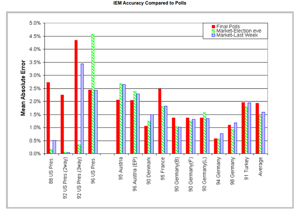

In Defence Of Event Based Prediction Markets
IN DEFENCE OF EVENT BASED PREDICTION MARKETS
The Crisis of Forecasting in the Information Age
On 10th October 2025, the Norwegian Nobel committee announced Maria Corina Machado as the Nobel Peace Prize recipient: some 10 hours later1 than a group of anonymous internet people had already made their consensus. External observers saw a massive, suspicious surge of betting on the Venezuelan opposition leader hours before the announcement on Polymarket. It indeed looked like a classic insider leak, having the odds shot up from 3.75% to nearly 73% overnight2 and of course prompting an internal investigation by the committee. The chairman of the committee who went on record to say "I don't think there have ever been any leaks in the entire history of the prize. I can't imagine that's the case"3 , may have been expected to accept it and move on- and thus- the investigation did and so did the world.
However, underneath the mainstream purview, there seems to be a silent revolution that hitherto restricted itself to Crypto community or heterodox economics. For the chronic lurker in such spaces or a perpetual seeker of information this is hardly any news. In fact, arguably, the big break for event-based prediction market platforms like Polymarket or Kalshi has been the manifestation of 2024 US national elections. For example, by the end of the Presidential debate, the odds that Biden would abandon the campaign had spiked from 20% to 34%. Within a few days, they shot up to 70%-two weeks before it was revealed that prominent Democrats such as Nancy Pelosi were privately urging the president to step aside.4 or that these markets consistently showed a strong lead for Trump since October whereas polls and mainstream perception said otherwise5. For the first time in human history, public beliefs across a variety of domains - from economics to politics and culture - are aggregated at scale through market prices and updated in real-time as new information arrives. One may scour these platforms to inform themselves who will win the Video Game of the year or when the frontier AI models will be released or who will Trump appoint as Fed chairman or infer more precise weather forecasts than consumer software applications (The market is a "Meta-Forecast." It is the weighted average of every smart person and every supercomputer, filtered by who is willing to lose money on it exhibit a prolific but successful weather man6) and so on!
And all of this is happening in one of the paradoxes of our time. Seemingly, the global economy and its sociopolitical superstructures operate under a deluge of data that is matched by a deficit of clarity. The mechanisms by which society has traditionally anticipated the future-opinion polling, expert committees, bureaucratic analysis, and media punditry-are increasingly revealing their structural inadequacies. For the newer generations, the policy distrust and misinformation from the COVID-19 pandemic is a good reference point but of course these tendencies can date further, from the failure to predict the 2008 financial crisis to the widespread polling errors in national elections etc. One may argue that social media or AI or rising inequality have precipitated all this but one cannot maintain that the expert class has not suffered a catastrophic crisis of confidence! It is into this epistemological breach that the event-based prediction market steps in as arguably the best truth-seeking machines humans have invented.
The Economics of Collective Intelligence
Hayekian Synthesis of Knowledge in society
To justify prediction markets "as arguably the best truth-seeking machines humans have invented" is to first acknowledge that the defence of prediction markets is, at its core, a defence of the price mechanism as a communicative tool. It rests on the assertion that a liquid market, incentivized by financial risk and reward, aggregates dispersed information more efficiently than any other known social technology. When individuals are compelled to back their beliefs with capital-to (borrow Taleb)8 have "skin in the game"-the noise of performative opinion fades, and the signal of genuine probability emerges. It is also worthwhile discussing that, its intellectual genealogy traces back to economic debates that have spanned the last century and where there is broad consensus these days.
The bedrock of prediction markets is found in Friedrich Hayek's seminal 1945 work, The Use of Knowledge in Society(Nobel Prize-winning paper7 !) He posits that the knowledge necessary to run an economy-or, by extension, to predict a complex outcome-is not given to anyone in its totality. Instead, it is dispersed as "bits of incomplete and frequently contradictory knowledge" held by separate individuals. And today, in many ways, prediction markets aren't about guessing, as inveterate gamblers or enterprising connoisseurs or external observers would conclude. They're about the earliest possible pricing of information, including information that isn't public yet. Thus, Hayek's argument that the "man on the spot" possesses unique information-whether it is a surplus of tin in a warehouse or a shift in voter sentiment in a rural county-that the central planner cannot know is strangely congruent.
By late 2025, we began witnessing institutionalization-the transition of this niche economic theory into a standard financial infrastructure. To the aware, the structural shifts around them suggest prediction markets aren't just growing but also becoming a permanent third pillar alongside traditional news and expert analysis. The genius of the price system is that it communicates this dispersed information without requiring the participants to understand the whole. In a prediction market, the price of a contract (let's say, "Inflation to exceed 3% in 2025") acts as a signal that integrates the private information of thousands of participants. When a trader buys a contract, they are not merely placing a bet; they are transmitting a signal that they possess information or a model suggesting the current probability is too low.
And thus, we have onto ourselves sophisticated information aggregation engines. In a perfect world the efficiency of prices as signals plus the power of decentralized knowledge ought to make these markets more accurate than traditional experts we have come to rely on.
Solving for the 'lemons' problem
Another angle to Hayek's knowledge Problem, germane to any society, is that the central economic problem is not resource allocation. How does society even organize to use knowledge that is dispersed amongst millions of individuals? These arguments which have historically bolstered the market side economy have since weathered the failure of command-based economies elsewhere. Society has greatly flourished where markets are the solution: knowledge is decentralized and prices are how society aggregates it.
This aggregation, however, faces one (among others) critical adversary in 'Information Asymmetries'- an instance, where hidden knowledge leads to market failure. The original example is George Akerlof's famous 1970 paper, "The Market for 'Lemons'9", where he uses the used car market as an example. Only a seller will know if their car is a "peach" (good) or a "lemon" (bad). The buyer does not. Because the buyer can't tell the difference, they are only willing to pay an average price. The result of which sellers of high-quality cars refuse to sell at that average price and leave the market. Eventually, only "lemons" are left. This is a market failure caused purely by a lack of shared information. One may extend this problem to infinite horizons like health/car insurance or bank loans or nature (e.g. a male peacock wants to prove to a female that he has great genes Information Asymmetry: he knows his genetics, she doesn't) or even first dates (On a first date, everyone presents their best self. One cannot know if the other person is kind, stable, or messy until later)!
Generations of economists and policy makers have worked on this problem and society has progressed a long way with signalling, screening, crowd-sourced review or even creating laws like "Truth in Lending10" acts, mandating FDA approval for drugs etc to solve market failures where apropos. Frictions persist for example when traditional institutions often incentivize the hoarding of this private information; a middle manager hides a project's failure to save their career, or a politician obscures a policy's flaws to save their poll numbers.
But all this, so far, is to say this is where event-based prediction markets act as the technological bridge to such problems. Unlike traditional mechanisms which rely on trust, prediction markets rely on greed: they incentivize Hayek's 'man on the spot' to monetize his/her private information. By allowing insiders to profit from correcting a false public narrative or otherwise, platforms like Polymarket or Kalshi effectively liquidate Akerlof's asymmetry, transforming hidden 'lemon' risks into visible, actionable prices.
Arbitraging away information asymmetry: historical lessons
Given that technological solutions have existed for some time, there also exist decades of empirical data to validate the theory of prediction markets. It will be remiss to not begin with the pioneer, the Iowa Electronic Markets (IEM). Established in 1988, by the University of Iowa, the IEM is also the longest-running prediction market experiment. Operating under a no-action letter from the CFTC had allowed decades of academic study of real-money election betting up until we have the modern platforms to judge. In a comprehensive comparison against 964 polls over five U.S. presidential elections (1988-2004), the IEM market price was closer to the eventual vote share than the polls 74% of the time.11 It held long-range accuracy especially as the market's superiority was most pronounced in the long term. When forecasting more than 100 days before an election, the market significantly outperformed polls12 suggesting that markets are better at discounting short-term news cycles and focusing on fundamental drivers!

Source13
But while election markets garner media attention, the use of prediction markets within corporations-where inside information is legal and encouraged- has provided some of the strongest evidence for their utility. Some prominent ones where:
(a)Google famously ran internal markets to predict product launch dates, user adoption numbers, and office opening dates.14 The study found that the markets were "reasonably efficient" and free of the hierarchical biases that plague traditional corporate reporting (where subordinates are afraid to report bad news to bosses). Although optimism bias was detected (employees overvaluing Google's success), experienced traders actively bet against this bias, correcting the prices. The markets effectively aggregated dispersed information across the company hierarchy.15
(b)Caltech with Hewlett-Packard (HP) conducted a three-year experiment to forecast printer sales. The prediction market's forecasts were more accurate than the company's official internal forecasts in 15 out of 16 events.16 The market included participants from finance, marketing, and engineering, aggregating "on-the-ground" knowledge that isolated departments lacked
(c)Similar trials at Ford Motor Company found that prediction markets reduced the mean squared error of sales forecasts by roughly 25% compared to traditional expert methods.17
(d Intel used prediction markets to forecast product demand, achieving accuracy up to 20% higher than official forecasts18. This improvement in supply chain efficiency translates to millions of dollars in saved inventory costs.
: have known that prediction markets consistently demonstrate an ability to outperform traditional forecasting.
The Curse of Speculation and ethics
All said, the world is not soft pedalling itself to some tech-utopian vision of Futarchy19(not anytime soon) nor it seems to take this trend to mainstream(other than elections or outlier major news events). But at the same time, it will be presumptuous to take the aversion as mere ignorance. Understandably, when for some it is a superior technology for truth-seeking, for some quick profit and for others a venue for speculation. One may argue that with the passing of regulations, like Polymarket no longer geo-fenced out of US20or Kalshi's legal victories in 2024, institutions no longer have to adopt the whole cloak and dagger attitude. But no one can fault major news outlets like CNN or the NYT to be legally and culturally hesitant to cite "gambling odds" as a primary source of truth, fearing regulatory backlash or accused of promoting vice. Thus, the issue of gambling and ethics (of all it) requires careful examination. To begin with, dismissing prediction markets as a new casino is like "shooting fish in a barrel". Except that before nuance reaches the mainstream and the first shot is even fired; the fish have already floated to the surface! Nonetheless, it is precisely worthwhile to start there.
Greed is good (for the truth)
It is true that there is a lot of speculative money flowing around, and about ~70%21 of Polymarket users are losing money. And so, the first argument in defence for an event-based prediction is that market speculation (or crudely dumb money) is more than welcome, because it increases liquidity/prediction pool for a given market/event. The closest analogy is akin to one of insurance markets. If a farmer wants to sell risk (the hedger) who buys the risk? Not another farmer because all farmers have the same risk (if prices drop, they all lose). The farmer needs someone who has no interest in the corn itself to take the other side of the bet and so the speculator is the underwriter. They are being paid a premium to take on a risk that nobody else wants. Consequently, speculators in prediction markets, as like many other markets, perform a crucial role.
The second argument has to do with the charges of gambling (as a vice) and decoupling it. Prediction markets divested of its speculative tendencies are an epistemic infrastructure. These markets don't predict the future: it simply reflects, faster than anything else, what's already known to a small group of people in the world. A counterintuitive explanation is juxtaposing traditional gambling with prediction markets. Take the fact that prediction markets will likely upend the US gambling22 (at least sports) in the near future. What the regulatory wins for Kalshi in 2024 signified are that the event contracts offered by Kalshi "were financial swaps subject to federal Commodity Futures Trading Commission (CFTC) regulation not gambling products subject to state regulation23." Even if this regulatory ruling singled out election markets, the other markets have continued to remain as is and in essence "allowed their "gambling" operation in all 50 states, including the roughly 20 states covering half of the U.S. population that have no or limited online sports betting"24! More illustrative of the decoupling point is the reasoning given by the judge "that the term gaming generally refers to games of chance (like roulette), whereas elections are determined by human activity and tangible outcomes. She noted that while the act of trading might resemble betting, the subject matter (elections) is not gaming. Therefore, the CFTC exceeded its statutory authority."25
The Economic Distinction: Risk Transfer
Another angle to decouple gambling from prediction markets is its intrinsic novelty in the mainstream conscious. A historical anchor to illustrate this is through the incipience of futures/derivative markets. The Dojima Rice Exchange (the world's first commodity futures exchange) existed in feudal Japan (Edo period, 1700s) where the Samurai were paid in rice, not currency. The problem arose wherein the price of rice fluctuated wildly due to weather and harvest conditions. A Samurai who might have been rich in the spring could be a destitute in the winter if rice prices crashed. They couldn't plan their lives or smooth their consumption (long term). A response to which the rich exchange in Osaka developed the world's first futures contract and attempted to solve via financial innovation.
In some parallels to today, the same accusation stuck: the Shogunate repeatedly tried to ban it, calling it gambling and blaming it for high prices. But the crux of the matter is that the market didn't create the risk; the risk (weather) existed in nature. The market simply allowed the Samurai to transfer that risk to merchants (speculators). It can be argued that blocking prediction markets today is like the Shogunate banning rice futures. It will not stop the uncertainty (the election, the war, the policy change); it just removes the tool people use to manage that uncertainty. To this effect, the paradigm to consider is event-based prediction markets are beliefs becoming a financial object.
Useless speculation or not
A valid question, however, is who the speculators are paying for/transferring risk from. Prediction markets make sense when there are real hedging needs but may not otherwise justify negative sum gambling. Considering that mass consumer markets Now enter late 2025 we are currently witnessing for prediction is very recent it is hard to offer any substantive arguments. One may argue that everyone has some stake in future events, at any given point, in some way or the other and that should be reason enough. Should this loose explanation fail to hold assumption (on a case-by-case basis) then one might explain away speculators as liquidity providers. The market after all owes it to the people who hold the bag when the future isn't necessarily in it.
To circle back, the defensible position in this case is the fact that there is information value to those markets. Consider, if mainstream institutions would internalize probabilities instead of point forecasts, markets instead of exclusively expert panels and continuous updating instead of reports. While it can sound bizarre (out of practice) it is simply extending the argument to inflation forecasts that modern society so relies on. Example being, interest rates matter to broad swathes of society and is the most mature event market in the world. The CME FedWatch Tool26 is at its essence literally a prediction market. It looks at the price of 30-day Fed Funds Futures to calculate the exact percentage probability of the Fed raising rates. In turn, the Federal Reserve itself looks at this tool to understand what the market expects. To put it crudely, the regulator uses the gamblers to guide policy!
Thus, if useless speculation provides the epistemic value (price discovery/hidden information) it is still an argument for the public good of these markets (externalities). We live in an era of "Fake News" and pundits with no accountability. A pundit on TV/internet or some public appearance can spew propaganda or misinformation and suffer no consequences if they are wrong. And there is a unique window to glean information from such markets and filter out the signal from the noise and the unsubstantiated.
Insiders, manipulation and dystopian risks
There is a separate discussion to be had about objections to the nature of wealth transfers (happening in such platforms), but in a setting where "greed destroying secrecy" is the whole point, any opposition to insider trading is moot. The whistleblower effect is the most desirable outcome because the market as a whole force honesty through financial incentive. The more difficult concern to deal with is all sorts of moral hazards that come up when people can bet on anything and simultaneously create incentives to make those things happen. The classic example is the "Assassination Market" problem wherein, if there is a market for "Will Person X die by December?", someone could bet "Yes" and then go kill them to collect the winnings. Absurd as it may sound it is also the most extreme theoretical risk. Relatedly, even the Pentagon's proposed "Terrorism Futures Market"27 (2003) was cancelled almost immediately- looking like to lawmakers that it might incentivize terrorists to bet on their own attacks. With widespread predicting there can also be "reflexivity" problems for a certain market such that the market doesn't just predict the future but bullies reality into some sort of self-fulfilling prophecy. It can be concerns with election manipulation or even the classic example of a bank run-esque scenario.
The proper response to the assassination markets or other extreme theoretically dystopian risks are that such technology has existed for some time (and arguably has been all for nought) with or without prediction markets. Assassination markets, for example, (infamously Silk Road) largely exist on the dark web or corners of the world outside the bounds of regulation- their utility and scope for what their externality may be- are not at all comparable to those that of a prediction market. It theoretically impossible to coordinate and manipulate real world events where everyone has a stake in the future and tangible outcomes exist that is worth more than any staked amount [Unless-thin markets, concentrated actors, low-cost interventions].
As regards to market manipulation, concerns that dictate for other parts of the financial world doesn't hold water. The rich for example won't control policy because they will lose their money if they bet based on bias rather than accurate information. Any, attempts to manipulate the market usually fail because other traders will exploit the manipulator's bad bets (in effect also subsidising them), increasing market accuracy. When everyone is financially rewarded for being right, the market, over time, filters out the noisemakers.
Challenges
Decades of corporate and policy experiments have showed consistent results that broad participation with monetary incentives led to accurate forecasts. With the mass trend of prediction markets the world has come across a major juncture point. Some challenges however loom large.
The Regulatory Tug-of-War
While federal courts (specifically in the Kalshi v. CFTC case) have largely ruled in favour of prediction markets, in that that these are event contracts (like futures), state regulators are fighting back. State gaming commissions (e.g., in New York, New Jersey, and Nevada) argue they are disguised "sportsbooks" or "gambling"28. Critics argue -regulatory arbitrage-that platforms are just trying to use federal loopholes to bypass strict state gambling laws. This is arguably an existential risk to the whole industry if states succeed in classifying them as gambling, platforms could be fractured state-by-state, destroying the global liquidity needed for accurate predictions.
A counter point would be that if all regulatory doors does close the whole industry would relegate itself to some grey zone (which has been its default spawning point for some time). So, what's the worst that could even happen? In ways the rise of cryptocurrency and decentralized finance (DeFi) has made prediction markets technically un-censorable (accessible via VPNs despite ban) and whatever regulatory exile only creates a glass ceiling on their utility. Thus, the true challenge is not about existence but legitimacy. If major platforms are forced to operate in legal grey zones, they remain cut off from institutional capital, (the hedge funds and risk managers) whose deep pockets are required to smooth out volatility and produce stable forecasts. And so, it remains to be seen what pans out for the regulatory landscape in the near future.
Liquidity and Keynesian beauty contest
The real-world utility of prediction markets is frequently bottlenecked by the behaviour of the crowd itself. The primary friction is the liquidity problem: as many economists may opine, while broad macro markets might find equilibrium, micro prediction pools are often too thin to generate a meaningful signal, leaving them vulnerable to asymmetry and manipulation. In these low-volume environments, price discovery fails because there simply aren't enough bettors to correct the odds. Furthermore, even liquid markets struggle with the Keynesian beauty contest29 effect, where traders may stop forecasting the actual event and instead bet on what they think others will believe, generating noise rather than truth. There can be argumentation that even thin, low-capital markets outperformed polls like that of the Iowa Electronic Markets (IEM) but such are investigations deserving of open questions, beyond the scope of this essay.
At this point in time, the saving grace for these markets is the incredible growth trend. The sheer explosion of retail participation; with platforms like Polymarket and Kalshi generating more than \$44 billion in trading volume30 2025 so far, one might assume the 'thin market' era is over. ![A graph with red and blue squares
AI-generated content may be incorrect.]()
Source31
Theoretically even if a weak form of efficient market hypothesis holds true then these markets are the most formidable forecasters ever created. Complementary to this trend will be the accompanying sociological defence for the fact that under the right conditions, groups are remarkably intelligent, often smarter than the smartest people in them. The conditions being diversity of opinion or independence or decentralization or aggregation, all of which prediction markets are uniquely designed to satisfy
The Cassandra problem
Ultimately, even when the market successfully navigates these irrationalities and produces an accurate forecast, it faces a sort of Cassandra problem: that the platform may correctly predict a disaster or a decline, but decision-makers-blinded by political bias or optimism- ignore the signal until it is too late. And so, all the information aggregation will have been for nothing (other than monetary gains for some). The challenge here is not generating the signal, but getting institutions to trust a decentralized, anonymous, and often counter-intuitive source over their own internal experts. Unless prediction markets can bridge this trust gap, they risk becoming nothing more than a museum of future history-capturing accurate warnings that society was too stubborn or ignorant to heed (which has been happening for some time now).
Notwithstanding, this could be a challenge that ameliorates itself with time and only appears with the benefit of hindsight. At least niche segments of internet agrees that prediction markets are well on the way to becoming a foundational layer of today's attention economy. Recent developments such as CNN strikes prediction data partnership with Kalshi35 thickens the plot!
Conclusive remarks
Ultimately, the case for prediction markets is no longer theoretical and has sort of devolved into the inevitability of it. We have at least built the technology to watch the nervous system of the world get upgraded in real-time. The venture capitalists of the world have also seemed to decide that a society with event-based prediction markets is more stable and better informed (accurate prices) than one without them and that gambling is a small price to pay for the signal. Traditional institutions seem to have moved too like how the Intercontinental Exchange (ICE) (the parent company that owns the New York Stock Exchange) made an investment of nearly \$2 billion in Polymarket or the Bloomberg terminal now integrating Polymarket data directly alongside stock tickers33
Perhaps most importantly, prediction markets offer a cure to an ail, a world fractured by echo chambers and algorithmically curated feeds. This powerful idea of markets disciplining narratives seem to have caught on as a16z calls prediction markets34 as the successor to postmodernism. The argument being that society tired of narratives and fake news (postmodern subjectivity) is hungry for objective truth backed by financial risk. There are reservations about prediction markets that experts will find agreeable or useful, but the alternative to remain reliant on the opaque, lagging, and biased forecasts of centralized institutions, seems like a risk that our current society has decided to move from.
Bibliography
2,3 -Possible Nobel Peace Prize leak was "highly likely" espionage, committee secretary says - CBS News
5- Harris v Trump: 2024 presidential election prediction model | The Economist
7- "The Use of Knowledge in Society" - Econlib
8- Skin in the Game | Nassim Nicholas Taleb | Talks at Google
9-The Market for "Lemons": Quality Uncertainty and the Market Mechanism on JSTOR
11,12,18- The power of prediction markets | Articles
13- Graph ~ IEM Accuracy Compared to Polls
14- GooglePredictionMarketPaper.pdf
16-Prediction Markets and Information Aggregation Mechanisms: A Business Application
17-Corporate Prediction Markets.docx
19- Futarchy8.doc
20- Polymarket Cleared to Launch in the U.S. After CFTC Green Light
21- 70% of Polymarket Traders Are Losing Money
27- Policy Analysis Market - Wikipedia
28- Prediction Markets Face Surge in Competition and Regulatory Challenges in 2026 | KuCoin
29- Keynesian beauty contest - Wikipedia
30- Prediction markets explode in 2025: Inside the Kalshi-Polymarket duopoly and challengers | The Block
31-Polymarket and Kalshi Volume (Monthly)
32- POLITICO Pro | Article | NYSE owner to invest up to \$2B in betting market startup Polymarket
33- Bloomberg Terminal Integrates Polymarket Election Data
34- Prediction: the successor to postmodernism | Andreessen Horowitz